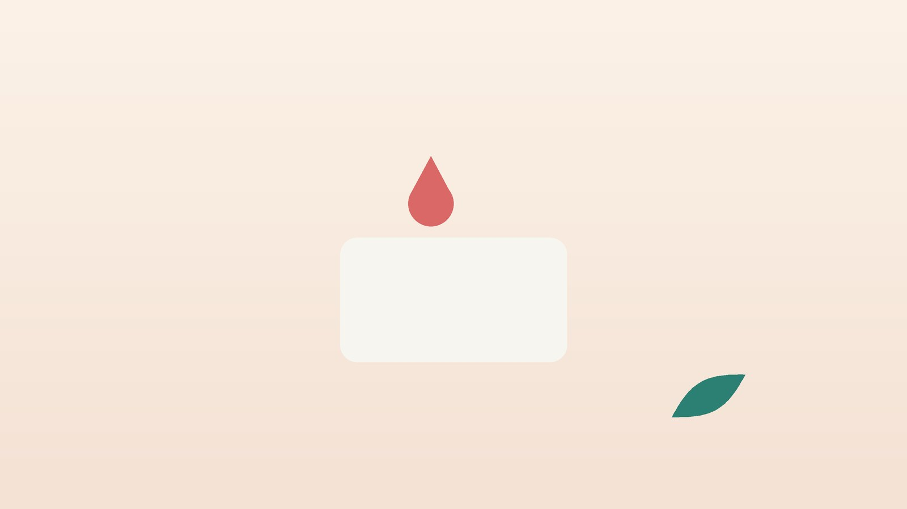

건강 칼럼 · 인천 소아 코피 한의원
아이가 코피를 자주 흘린다면, 소아 코피 확인과 관리

우리 아이 코피, 이런 모습인가요?
- 한 달에 두세 번 이상 코피가 난다
- 아침에 일어나 보면 베개나 콧속에 피딱지가 있다
- 코를 자주 후비거나 비비는 버릇이 있다
- 비염이 있어 코가 늘 막히거나 가렵다
- 난방을 시작하는 가을·겨울에 유난히 잦다
- 코피는 대개 한쪽에서 나고 10분 안에 멈춘다
이 체크리스트는 진단 도구가 아니라 상담이 필요한지 가늠해 보는 참고용입니다.
아이들은 왜 이렇게 코피가 잘 날까요?
코 가운데 벽(비중격)의 앞쪽에는 여러 혈관이 그물처럼 모이는 키셀바흐 부위가 있습니다. 이곳은 점막이 얇고 콧구멍 입구와 가까워 손가락이나 건조한 공기에 쉽게 상처가 납니다. 아이 코피의 대부분이 바로 이 앞쪽에서 나며, 양이 많아 보여도 올바르게 누르면 대개 멈춥니다.
특히 알레르기 비염이 있는 아이는 점막이 부어 있고 가려워 자꾸 비비게 되고, 콧물과 코 세척으로 점막이 약해져 코피가 반복되기 쉽습니다. 겨울철 난방으로 실내가 건조해지면 점막이 갈라져 자는 동안 피가 나기도 합니다. 드물게 콧속 이물질, 혈액이 잘 굳지 않는 질환, 사춘기 남자아이의 코 안쪽 혈관성 종양이 원인인 경우도 있어, 양상을 살펴 구분합니다.
응급실이나 혈액검사가 먼저 필요한 신호
- 제대로 눌렀는데도 20분 넘게 멈추지 않는다
- 양이 많아 입으로도 넘어오고 얼굴이 창백하며 어지러워한다
- 넘어지거나 부딪힌 뒤 코피가 났고 코 모양이 변했다
- 코피가 잦으면서 이유 없이 멍이 잘 들거나 잇몸에서도 피가 난다
- 가족 중 피가 잘 멈추지 않는 사람이 있다
- 한쪽 코만 막히고 냄새 나는 콧물이나 코피가 계속된다
오래 멈추지 않거나 다친 뒤의 코피는 응급실로 가세요. 잦은 코피와 멍, 잇몸 출혈이 함께 있다면 혈소판이나 응고 기능을 보는 혈액검사가 필요하고, 한쪽 코 증상이 이어지면 이비인후과에서 콧속을 확인해야 합니다.
한의학은 반복되는 코피를 어떻게 보나요?
한의학에서는 코로 피가 나는 것을 비뉵(鼻衄)이라 하고, 『동의보감』은 피가 몸 밖으로 새는 여러 증상과 함께 뉵혈(衄血)을 다룹니다. 아이는 몸에 열이 쉽게 차오르는 체질이라, 폐(肺)나 위(胃)에 쌓인 열이 위로 치밀어 코의 가는 혈관을 상하게 하는 경우가 많다고 보았습니다.
반대로 열이 아니라 몸이 허해서 피를 붙잡아 두지 못하는 경우도 있습니다. 비(脾)는 피가 혈관 밖으로 새지 않게 다스리는 역할을 한다고 보았는데, 입이 짧고 쉽게 지치는 아이가 별 자극 없이 코피를 자주 흘린다면 이쪽을 의심합니다. 진액이 부족해 점막이 마른 아이도 있어, 열을 식힐지, 기운을 보탤지, 촉촉하게 적실지를 나누어 봅니다.
우리 아이는 어떤 유형일까?
원인 질환이 없다는 것을 확인한 뒤, 코피가 잦은 몸의 바탕을 네 가지로 나누어 봅니다.
1. 폐열(肺熱) 코가 뜨겁고 마른 아이
- 이런 분에게 많아요
- 비염이 있고 열이 많은 아이
- 나타나는 모습
- 콧속이 화끈거리고 코를 자주 비비다 피가 난다
- 함께 오는 몸의 신호
- 콧물이 진함, 목 건조, 기침
- 진찰에서 보이는 모습
- 코 점막이 붉고 혀끝이 붉음
- 치료 방향
- 폐의 열을 식혀 코 점막을 진정시키는 방향 (형개연교탕 계열)
- 오늘부터 해 볼 것
- 잠자는 방의 습도를 40~60%로 맞춰 주세요.
2. 위열(胃熱) 먹성이 좋고 열이 오르는 아이
- 이런 분에게 많아요
- 단 음식, 기름진 간식을 좋아하는 아이
- 나타나는 모습
- 코피 양이 많고 붉으며 입 냄새가 난다
- 함께 오는 몸의 신호
- 변비, 잇몸이 잘 붓는다, 갈증
- 진찰에서 보이는 모습
- 혀가 붉고 설태가 노람
- 치료 방향
- 위의 열을 내려 주는 방향 (청위산 계열)
- 오늘부터 해 볼 것
- 저녁 간식을 과일이나 물로 바꿔 보세요.
3. 비불통혈(脾不統血) 기운이 약해 피를 못 붙잡는 아이
- 이런 분에게 많아요
- 마르고 쉽게 지치는 아이
- 나타나는 모습
- 특별한 자극 없이 묽은 코피가 조금씩 자주 난다
- 함께 오는 몸의 신호
- 얼굴이 창백, 식욕 부진, 멍
- 진찰에서 보이는 모습
- 혀가 옅고 맥이 약함
- 치료 방향
- 비의 기운을 북돋아 피를 붙잡게 하는 방향 (귀비탕 계열)
- 오늘부터 해 볼 것
- 멍이 잘 든다면 먼저 혈액검사를 받아 보세요.
4. 음허조(陰虛燥) 진액이 부족해 마른 아이
- 이런 분에게 많아요
- 잠이 얕고 밤에 땀을 흘리는 아이
- 나타나는 모습
- 밤사이 코가 말라 아침에 피딱지가 생긴다
- 함께 오는 몸의 신호
- 입술 건조, 손발바닥이 뜨거움
- 진찰에서 보이는 모습
- 혀가 붉고 설태가 적음
- 치료 방향
- 진액을 보태 점막을 적시는 방향 (육미지황탕 계열)
- 오늘부터 해 볼 것
- 잠들기 전 콧구멍 입구에 바셀린을 얇게 발라 주세요.
한의원에서는 어떻게 진찰하나요?
- 코피 기록: 횟수, 한쪽인지 양쪽인지, 멈추기까지 걸린 시간, 시간대를 여쭙니다.
- 출혈 경향 확인: 멍, 잇몸 출혈, 가족력, 복용 중인 약을 확인하고 필요하면 혈액검사를 먼저 안내합니다.
- 콧속 관찰: 코 앞쪽 점막의 색과 건조함, 딱지, 비염으로 부은 정도를 봅니다.
- 체질 진찰: 식사와 배변, 수면, 땀과 함께 설진·맥진으로 유형을 판단합니다.
스티커침·한약 치료는 어떻게 하나요?
1. 침 치료
코피가 나고 있을 때는 침보다 지혈이 먼저입니다. 침 치료는 코피가 없는 평소에 코 점막의 열과 건조를 다스리기 위해 하며, 아이에게는 바늘 대신 피부에 붙이는 소아 스티커침을 씁니다.
- 영향(迎香): 콧방울 바깥 가장자리 바로 옆, 팔자 주름이 시작되는 곳. 코 점막을 다스리는 대표 혈입니다.
- 상성(上星): 이마 앞머리털 경계 가운데에서 손가락 한 마디 반쯤 위. 예로부터 코 증상에 써 왔습니다.
- 합곡(合谷): 손등 엄지와 검지 뼈 사이에서 검지 쪽으로 볼록한 곳. 얼굴의 열을 내립니다.
- 공최(孔最): 팔꿈치 안쪽 주름 엄지 쪽 끝에서 손목 방향으로 아래팔 길이의 절반이 조금 안 되게 내려온 곳. 폐의 열과 출혈에 씁니다.
2. 약침
코피로 오는 어린이에게는 약침을 쓰지 않습니다.
3. 한약
탕약을 기본으로 하되 아이가 거부감 없이 먹도록 쓴맛이 덜한 약재 위주로 짓습니다. 열을 식히는 약재 중에는 쓴 것이 많아 양과 조합을 조절하며, 집에서 단것을 조금 타서 먹여도 됩니다. 꿀은 돌이 지나기 전에는 쓰면 안 됩니다. 비염약, 코 스프레이, 해열진통제처럼 복용 중인 약은 알려 주시면 확인해 처방합니다.
원장님이 네이버 블로그에 진료 이야기와 건강 정보를 꾸준히 올리고 있습니다. 더 많은 이야기는 블로그에서 확인해 보세요.
블로그 보기관리는 어떤 순서로 진행되나요?
- 첫 진료 경고 신호와 출혈 경향을 확인하고, 집에서 할 지혈법과 가습·보습 방법을 안내합니다.
- 2~4주 스티커침과 탕약을 시작하고 코피가 난 날을 달력에 표시합니다.
- 1~2개월 한 달 코피 횟수와 피딱지, 비염 증상을 처음과 비교합니다.
- 환절기 대비 난방을 시작하는 계절이나 비염이 심해지는 시기에 미리 점막 관리를 합니다.
코피는 계절과 실내 환경의 영향을 크게 받아, 횟수 기록을 보며 관리 기간을 정합니다.
코피가 났을 때, 그리고 평소 관리
- 올바른 지혈: 의자에 앉혀 고개를 약간 앞으로 숙이게 하고, 엄지와 검지로 코의 말랑한 콧볼 양쪽을 꽉 잡아 10분 동안 누릅니다. 중간에 손을 떼서 확인하지 마세요.
- 하지 말 것: 고개를 뒤로 젖히거나 눕히면 피가 목으로 넘어가 토할 수 있습니다. 휴지를 깊이 쑤셔 넣는 것도 피하세요.
- 멈춘 뒤: 몇 시간 동안은 코를 세게 풀거나 후비지 않게 하고, 뜨거운 목욕은 미룹니다.
- 점막 보습: 실내 습도를 40~60%로 유지하고, 콧구멍 입구에 바셀린이나 식염수 젤을 얇게 바릅니다.
- 손톱과 비염: 손톱을 짧게 깎고, 비염이 있다면 꾸준히 관리해 코를 비비는 횟수를 줄입니다.
다른 진료가 함께 필요한 경우
- 20분 넘게 멈추지 않거나 다친 뒤의 코피는 응급실로 가세요.
- 멍, 잇몸 출혈이 함께 있다면 소아청소년과에서 혈액검사를 받으세요.
- 한 혈관에서 반복된다면 이비인후과에서 지져서 막는 소작술이 도움이 될 수 있습니다.
- 한쪽 코 막힘과 냄새 나는 콧물이 이어지면 이물질 확인을 위해 이비인후과 진료를 받으세요.
자주 묻는 질문 Q&A
- Q1. 코피가 나면 고개를 뒤로 젖혀야 하지 않나요?
- 아닙니다. 피가 목으로 넘어가 구토를 할 수 있으니 앞으로 살짝 숙이고 콧볼을 눌러 주세요.
- Q2. 콧등 위쪽을 누르면 되나요?
- 코뼈가 있는 윗부분이 아니라 아래쪽 말랑한 콧볼을 눌러야 혈관이 모인 곳이 압박됩니다.
- Q3. 얼음찜질이 도움이 되나요?
- 콧등에 찬 수건을 대는 것은 보조적으로 쓸 수 있지만, 콧볼을 누르는 것이 가장 중요합니다.
- Q4. 코피를 자주 흘리면 빈혈이 생기나요?
- 대부분은 양이 적어 괜찮지만, 아이가 창백하고 쉽게 지친다면 혈액검사로 확인해 보세요.
- Q5. 스티커침은 아프지 않나요?
- 피부에 붙이기만 하는 방식이라 아이들이 대부분 아프지 않게 받습니다.
- Q6. 한약이 쓰면 어떻게 먹이나요?
- 쓴 약재를 최소한으로 줄여 짓고, 설탕이나 올리고당을 약간 넣어 먹여도 괜찮습니다. 첫돌 전이라면 꿀만은 빼 주세요.
- Q7. 크면 괜찮아지나요?
- 앞쪽 코피는 자라면서 줄어드는 경우가 많습니다.
- Q8. 코 세척을 해도 되나요?
- 해도 되지만 너무 세게 하면 점막이 상할 수 있어 부드럽게, 코피가 잦은 시기에는 횟수를 줄이세요.
문원열 대표원장한의사 · 365스마일한의원
인천 서구 가정동 한자리에서 10년 넘게 진료하며, 환자 한 분 한 분의 아픔을 깊이 들여다보고 근본적인 원인을 찾는 진료를 지향합니다.
진료 안내
- 진료시간
- 평일 09:00~20:00 (점심시간 13:00~14:00)
토·일·공휴일 09:00~15:00 - 주소
- 인천광역시 서구 가경주로 46, 2층 (가정동)
인천2호선 가정중앙시장역 인근
영상으로 길 안내 보기 → - 주차
- 한의원 건물 바로 앞 1층 도원주차장
- 예약
- 예약 바로가기 또는 전화 예약
진료시간은 사정에 따라 바뀔 수 있으니 방문 전 전화로 확인해 주세요.
참고 자료
- Kucik CJ, Clenney T. Management of epistaxis. American Family Physician, 2005
- 허준, 『동의보감(東醫寶鑑)』 내경편 혈(血) 문: 뉵혈(衄血)
- 질병관리청 국가건강정보포털 — 원문
※ 이 글은 일반적인 건강 정보이며, 개인의 상태에 따라 치료 방법과 결과는 다를 수 있습니다. 정확한 진단과 치료는 진료를 통해 결정됩니다. 침·약침 시술 후 드물게 멍, 통증 등이 생길 수 있습니다.